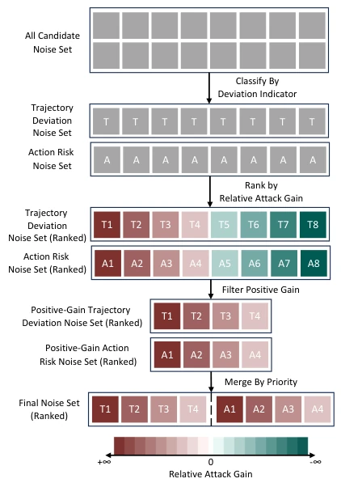
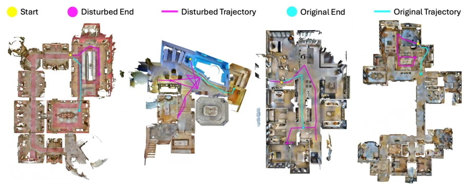

Figure 1: Comparison between existing and our target adver- sarial settings for VLN. Most prior vision-based adversarial attacks assume a white-box setting requiring access to model gradients, while real-world deployed systems are typically evaluated under black-box constraints with limited compu- tational resources. Our goal is to develop a gradient-free and cost-efficient framework for VLN robustness evaluation.
Figure 2: Behavior-guided perturbation optimization loop under black-box setting. (1) Generate trial candidate perturbations by sampling each noise from the population and overlaying it on the current base. (2) Evaluate the agent under each trial perturbation. (3) Compute attack relative gain using a dual-granularity feedback from trajectory outputs, including trajectory- level score, action-level score, and a deviation indicator. (4) Update the base if the gain improves. Otherwise, retain it and flip the search direction. (5) Evolve the population via selection, crossover, and mutation for the next round (see Sections 3.2 and 3.3).

Figure 3: Ranking of trial candidate noises by relative gain. Candidates are first split by deviation indicator 𝛾into tra- jectory deviation vs. action risk sets. Within each set, rank- ing is by relative gain (warmer colors = larger positive gain; cooler = negative). Non-positive gains are discarded. The two positive-gain sets are then merged, prioritizing trajectory deviation candidates, to form the final ranked set.
Figure 4: Visual comparison of the agent’s first-person observations under different perturbations. We visualize how different adversarial strategies affect the agent’s visual input in two distinct scenes. From left to right: clean input, brightness shift, localized mask occlusion, Gaussian noise, and perturbation from our method. LPIPS score is annotated in the bottom left corner of each image (lower is better), quantifying the perceptual stealthiness of each perturbation.

Figure 5: Trajectory deviation induced by adversarial perturbations. We visualize the agent’s navigation trajectories before and after our attack on four different scenes. Each map overlays the original trajectory (cyan line) and its endpoint (cyan dot) with the perturbed trajectory (pink line) and disturbed endpoint (pink dot), both originating from the same start position (yellow). Under attack, the agent consistently deviates from its intended trajectory and finally fails to reach the goal.